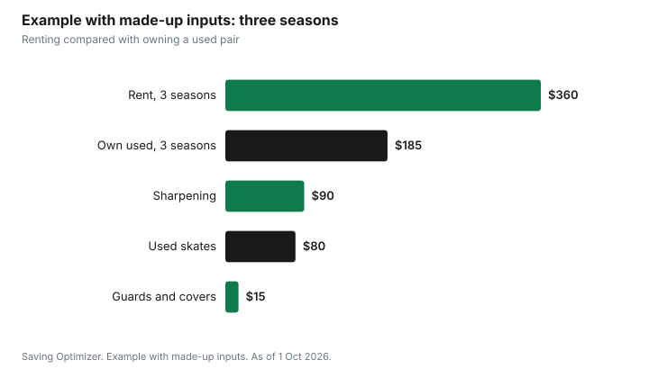

Sports · Canada
Buying and Sharpening Skates as an Adult in Canada
Adults who skate a few times a winter can rent, but anyone who skates regularly saves money and skates better in their own pair. Buy for fit first, because a well-fitting mid-range skate beats an expensive one that pinches. Used skates are a good choice if the boot still supports your ankle and the blade has plenty of steel left. Sharpen on a schedule based on how many hours you skate, not only when the edges feel gone. Some public rinks rent skates and offer sharpening: Toronto rents skates at Nathan Phillips Square in winter, and the National Capital Commission lists skate rentals and sharpening among the services on the Rideau Canal Skateway.
Key takeaways
- Rent for one or two outings a year; own if you skate regularly.
- Choose the type for how you skate: hockey, figure or recreational.
- Fit beats price. Heel locked, toes brushing the front, no pressure points.
- Used skates are fine if the boot supports your ankle and the blade has steel left.
- Sharpen on a schedule based on hours skated.
- Example with made-up inputs: owning a used pair costs $185 over three seasons, compared with $360 in rentals.
Skate types
The right skate depends on how you skate. Hockey skates are built for quick turns and stops. Figure skates have a toe pick and a longer blade, and suit adults who want to learn spins and jumps or simply prefer the feel. Recreational skates have softer, warmer boots and suit casual outdoor skating.
| Type | Best for | Notes |
|---|---|---|
| Hockey | Rec hockey, quick turns and stops, most public skating | Wide range of stiffness and price |
| Figure | Learning figure skating, adults who like a toe pick | Toe pick takes getting used to for former hockey skaters |
| Recreational | Casual outdoor skating, trails and canals | Warmer and softer; less support for hard skating |
Used skates
Skates often get sold used when someone changes size, quits a sport or upgrades. Used skates from sports swaps, second-hand shops and buy-nothing groups can be very good value. Check the boot and the blade.
- Boot: should still hold your ankle upright when laced; avoid boots that fold at the ankle.
- Blade: look for plenty of steel above the holder and no rust or cracks.
- Holder: no cracks where the blade attaches.
- Eyelets: none missing or torn out.
- Liner: not torn at the heel.
- Budget a sharpening for any used pair.
For children's skates, swaps and used gear make even more sense because they outgrow them; see kids' winter gear costs.
Fitting
Fit matters more than price. Try skates on with the socks you will skate in, lace them fully, and stand and walk on a mat.
| Check | Good fit |
|---|---|
| Toes | Brushing the front when standing; slightly back when knees bent |
| Heel | Locked in, little or no lift when you flex forward |
| Width | No pinching at the sides; no room to slide |
| Ankle | Supported when laced; does not collapse inward |
| Pressure points | None after ten minutes of standing and walking |
Skate sizing often differs from shoe sizing, and brands differ, so try before buying. If ordering online, check the return policy first.
Sharpening costs
Sharpening restores the edges that grip the ice. How often depends on how many hours you skate, how hard the ice is, and whether you walk on anything but rubber mats. Many recreational skaters sharpen every several hours of skating; hockey players often sharpen more frequently. A shop can recommend a schedule. Use blade guards when walking off the ice and dry blades after every skate to prevent rust.
| Habit | Why |
|---|---|
| Sharpen on a schedule | Edges wear gradually; you may not notice until you slip |
| Wear guards off the ice | Concrete and grit dull blades quickly |
| Dry blades after skating | Prevents rust |
| Store with soft covers, not hard guards | Hard guards trap moisture |
| Ask for the same sharpening each time | Consistency helps your feel on the ice |
Some rinks offer sharpening. The NCC lists skate rentals and sharpening among the services on the Rideau Canal Skateway. Local sports shops and arenas offer it too; ask about punch cards or season packages if you skate often.
Where to find good prices
Timing and place both matter. Sports swaps run by community groups and minor hockey associations often happen in the fall before the season starts, and that is when the most used skates are available. Second-hand sports shops let you try skates on and sometimes buy back outgrown pairs. Online marketplaces have the widest choice, but you cannot test fit before meeting the seller, so bring your skating socks and try them on before paying. New skates from last season's model line are often discounted once new models arrive; check the store's return policy before buying.
Accessories worth having
A few small items make skates last longer and skating more comfortable. Blade guards protect edges when you walk from the change room to the ice. Soft covers absorb moisture during storage. A small towel dries blades after every skate. Thin, moisture-wicking socks usually fit better than thick cotton ones. Toronto's drop-in skating page says most programs require a helmet and lists the rule for each activity and age group, so check your rink's rule before you go. None of these need to be expensive, and many come in used bundles with skates.
Renting versus owning
Renting makes sense for one or two outings a year. Toronto's drop-in skating page says skate rentals are available at Nathan Phillips Square during the winter season, and it also describes a free Skate Lending Library at select locations where you can borrow skates, helmets and skating aids. The NCC lists rentals on the Rideau Canal Skateway. Borrowing first is a cheap way to find out which type and size suit you before buying. Once you skate several times a season, owning wins, especially with a used pair.
Example with made-up inputs: three seasons
These numbers are an example with made-up inputs. They are not shop or rink prices. An adult skates eight times a season. Renting at $15 a time costs $120 a season, or $360 over three seasons. A used pair of hockey skates costs $80, and sharpening at $10 three times a season costs $30 a season, plus $15 for blade guards and soft covers. Three seasons cost $80 + $90 + $15 = $185.
| Item | Rent | Own used |
|---|---|---|
| Skates | — | $80 |
| Rentals, 24 times at $15 | $360 | — |
| Sharpening, 9 times at $10 | — | $90 |
| Guards and soft covers | — | $15 |
| Total | $360 | $185 |

Plan
- Decide how often you will skate this season.
- Choose the skate type for how you skate.
- Look for used skates at swaps and second-hand shops; try them on.
- Use the fit checklist and walk in them for ten minutes.
- Sharpen before your first skate and on a schedule after that.
- Find free public skating; see public skating and adult lessons.
Sources
- City of Toronto, Drop-in Skating, toronto.ca, as of 1 Oct 2026. Skate rentals at Nathan Phillips Square in winter; free Skate Lending Library at select locations; helmet rules by activity and age.
- National Capital Commission, Rideau Canal Skateway, ncc-ccn.gc.ca, as of 1 Oct 2026. Services include skate rentals and sharpening.
- The fit and care checklists are planning tools written for this guide.
- The rental, skate and sharpening prices and totals in the example are an example with made-up inputs.
Frequently asked questions
Should I buy or rent skates as an adult?
Rent if you skate once or twice a year. If you skate several times a season, owning, especially a used pair, usually costs less within a season or two.
How should skates fit?
Toes should brush the front when standing, the heel should be locked in, the ankle supported, and there should be no pressure points after ten minutes of standing and walking.
How often should I sharpen my skates?
It depends on how many hours you skate and on the ice. Recreational skaters often sharpen every several hours; ask a shop for a schedule, and use guards off the ice to keep edges longer.
Where can I rent skates in Toronto?
Toronto's drop-in skating page says skate rentals are available at Nathan Phillips Square during the winter season.
Are used skates worth buying?
Yes, if the boot still supports your ankle, the blade has plenty of steel left and the holder is not cracked. Budget a sharpening.
Researched and drafted with AI assistance and fact-checked against official Canadian sources. How we create content.
Disclosure: Saving Optimizer may earn a commission if a partner link is added later, such as a sporting goods or cash-back offer type. No partnership is claimed on this page, and no shop or brand is ranked. Education only.